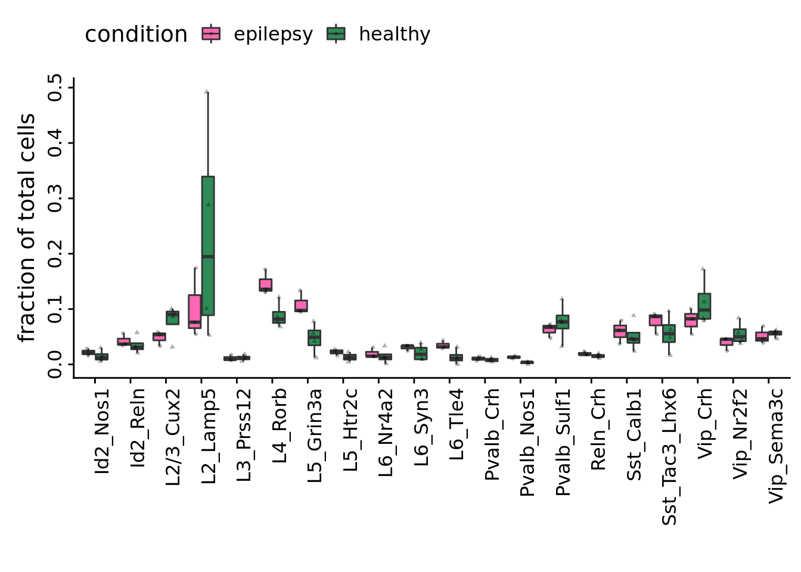
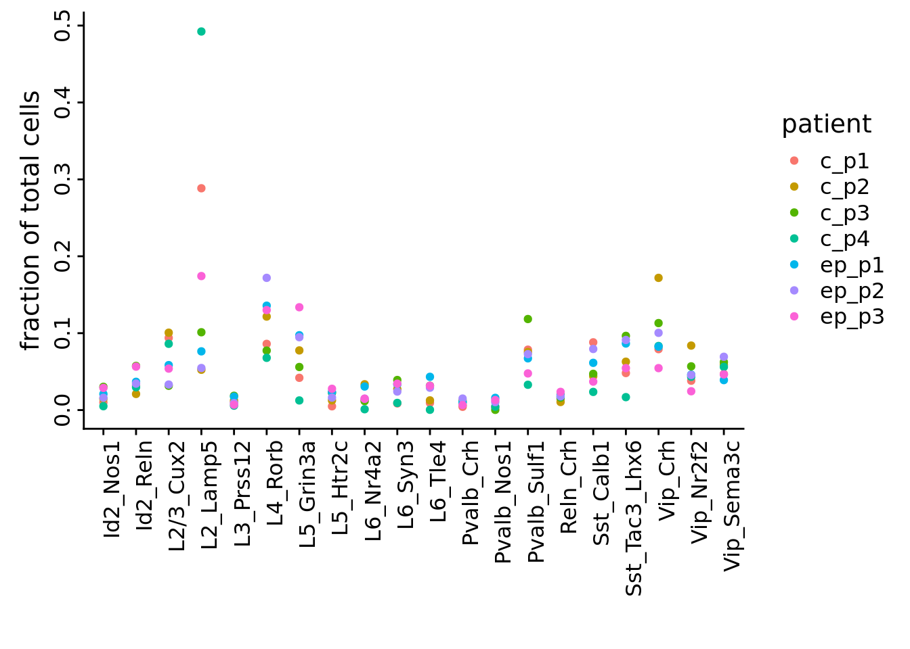

Last updated: 2019-04-29
Checks: 6 0
Knit directory: SecretUtils/
This reproducible R Markdown analysis was created with workflowr (version 1.3.0). The Checks tab describes the reproducibility checks that were applied when the results were created. The Past versions tab lists the development history.
Great! Since the R Markdown file has been committed to the Git repository, you know the exact version of the code that produced these results.
Great job! The global environment was empty. Objects defined in the global environment can affect the analysis in your R Markdown file in unknown ways. For reproduciblity it’s best to always run the code in an empty environment.
The command set.seed(20190415) was run prior to running the code in the R Markdown file. Setting a seed ensures that any results that rely on randomness, e.g. subsampling or permutations, are reproducible.
Great job! Recording the operating system, R version, and package versions is critical for reproducibility.
Nice! There were no cached chunks for this analysis, so you can be confident that you successfully produced the results during this run.
Great! You are using Git for version control. Tracking code development and connecting the code version to the results is critical for reproducibility. The version displayed above was the version of the Git repository at the time these results were generated.
Note that you need to be careful to ensure that all relevant files for the analysis have been committed to Git prior to generating the results (you can use wflow_publish or wflow_git_commit). workflowr only checks the R Markdown file, but you know if there are other scripts or data files that it depends on. Below is the status of the Git repository when the results were generated:
Ignored files:
Ignored: .Rhistory
Ignored: .Rproj.user/
Untracked files:
Untracked: .Rbuildignore
Untracked: DESCRIPTION
Untracked: NAMESPACE
Untracked: R/hello.R
Untracked: analysis/all.panels.pdf
Untracked: analysis/cell_type_total_tSNE.w.pdf
Untracked: analysis/fraction.all.pdf
Untracked: analysis/subtype_distances.Rmd
Untracked: analysis/subtype_distances2.Rmd
Untracked: analysis/subtype_distances4.Rmd
Untracked: analysis/test_output.Rmd
Untracked: analysis/transmute_peters_code.Rmd
Untracked: man/
Unstaged changes:
Modified: analysis/subtype_distances3.Rmd
Modified: analysis/transmute_code_eps.Rmd
Note that any generated files, e.g. HTML, png, CSS, etc., are not included in this status report because it is ok for generated content to have uncommitted changes.
These are the previous versions of the R Markdown and HTML files. If you’ve configured a remote Git repository (see ?wflow_git_remote), click on the hyperlinks in the table below to view them.
| File | Version | Author | Date | Message |
|---|---|---|---|---|
| Rmd | 6065b04 | githubz0r | 2019-04-29 | stupid html file |
| html | 026c755 | githubz0r | 2019-04-29 | Build site. |
| Rmd | b376f85 | githubz0r | 2019-04-29 | stupid html file |
| html | 91d36c0 | githubz0r | 2019-04-29 | Build site. |
| Rmd | dbd7778 | githubz0r | 2019-04-29 | updating functions |
#editor_options:
#chunk_output_type: inlineload packages and data
library(conos)Loading required package: MatrixLoading required package: igraph
Attaching package: 'igraph'The following objects are masked from 'package:stats':
decompose, spectrumThe following object is masked from 'package:base':
unionlibrary(parallel)
library(ggplot2)
library(Matrix)
library(data.table)
library(pagoda2)
library(cowplot)
Attaching package: 'cowplot'The following object is masked from 'package:ggplot2':
ggsavelibrary(dplyr)
Attaching package: 'dplyr'The following objects are masked from 'package:data.table':
between, first, lastThe following objects are masked from 'package:igraph':
as_data_frame, groups, unionThe following objects are masked from 'package:stats':
filter, lagThe following objects are masked from 'package:base':
intersect, setdiff, setequal, unionlibrary(abind)
library(tidyr)
Attaching package: 'tidyr'The following object is masked from 'package:igraph':
crossingThe following object is masked from 'package:Matrix':
expandrequire(Rtsne)Loading required package: Rtsnesource('/home/larsc/SecretUtils/R/asdf.R')
source('/home/larsc/SecretUtils/R/peter_code_utils.R')
con <- readRDS(file.path('/home/larsc/data/10x_preproced_graphed.rds'))
con <- Conos$new(con)
annot <- readRDS(file.path('/home/demharters/R/projects/UPF9_14_17_19_22_23_24_32_33/metadata_10x_final.rds'))
fraction_palette_eps <- c(epilepsy='hotpink', healthy='seagreen') ‘Fractional’ changes.
test_dfe <- FractionalChanges(annot, 1, 2 ,3)
p <- ggplot(na.omit(test_dfe),aes(x=subtype,y=freq,dodge=condition,fill=condition))+geom_boxplot(notch=FALSE,outlier.shape=NA) +scale_fill_manual(values=fraction_palette_eps) + geom_point(position = position_jitterdodge(jitter.width=0.1),color=adjustcolor(1,alpha=0.3),aes(pch=condition),size=0.8)+ theme(axis.text.x = element_text(angle = 90, hjust = 1), axis.text.y = element_text(angle = 90, hjust = 0.5)) +xlab("") +ylab("fraction of total cells")+ theme(legend.position="top")
p
Distance matrix tsne plot
annot2 <- annot %>% mutate(cellid=rownames(annot))
ctdm_and_cct <- Makectdm(con, annot2, 1, 2, 4)
ctdm <- ctdm_and_cct[[1]]
cct <- ctdm_and_cct[[2]] # returning this one too because we need it for the other part, a bit messy
xd <- WeighDistances(ctdm)
xde <- Rtsne(xd,is_distance=TRUE, perplexity=2,max_iter=1e3)$Y
df <- data.frame(xde); rownames(df) <- rownames(xd); colnames(df) <- c("x","y");
df$fraction <- NA
df[grep('c_',df %>% rownames),]$fraction <- 'healthy' # not exactly sure how to best generalize this
df[grep('ep_',df %>% rownames),]$fraction <- 'epilepsy' # since we don't separate patient and sample in our own annotation
df$patient <- rownames(df)
df$ncells <- colSums(cct)[rownames(df)]
ggplot(df,aes(x,y,color=patient,shape=fraction,size=log10(ncells))) + geom_point() + theme_bw() + xlab("") + ylab("") + theme(axis.title=element_blank(), axis.text=element_blank(), axis.ticks=element_blank()) + guides(color=guide_legend(ncol=2))
| Version | Author | Date |
|---|---|---|
| 91d36c0 | githubz0r | 2019-04-29 |
Distribution distances per cell type (using ctdm so must be unweighted)
min_cells=0
xl <- MakeXl(ctdm, min_cells)
ggplot(na.omit(xl),aes(x=cell,y=value))+geom_boxplot(notch=FALSE)+geom_jitter(aes(col=comparison))+theme(axis.text.x = element_text(angle = 90, hjust = 1), axis.text.y = element_text(angle = 90, hjust = 0.5)) +xlab("") +ylab("inter-patient expression distance")+ theme(legend.position="top")
sessionInfo()R version 3.5.3 (2019-03-11)
Platform: x86_64-pc-linux-gnu (64-bit)
Running under: Ubuntu 18.04.2 LTS
Matrix products: default
BLAS: /usr/lib/x86_64-linux-gnu/atlas/libblas.so.3.10.3
LAPACK: /usr/lib/x86_64-linux-gnu/atlas/liblapack.so.3.10.3
locale:
[1] LC_CTYPE=en_US.UTF-8 LC_NUMERIC=C
[3] LC_TIME=en_US.UTF-8 LC_COLLATE=en_US.UTF-8
[5] LC_MONETARY=en_US.UTF-8 LC_MESSAGES=en_US.UTF-8
[7] LC_PAPER=en_US.UTF-8 LC_NAME=C
[9] LC_ADDRESS=C LC_TELEPHONE=C
[11] LC_MEASUREMENT=en_US.UTF-8 LC_IDENTIFICATION=C
attached base packages:
[1] parallel stats graphics grDevices utils datasets methods
[8] base
other attached packages:
[1] Rtsne_0.14 tidyr_0.8.3 abind_1.4-5
[4] dplyr_0.8.0.1 cowplot_0.9.4 pagoda2_0.1.0
[7] data.table_1.12.2 ggplot2_3.1.1 conos_1.0.0
[10] igraph_1.2.4 Matrix_1.2-17
loaded via a namespace (and not attached):
[1] viridis_0.5.1 viridisLite_0.3.0 shiny_1.3.1
[4] assertthat_0.2.1 triebeard_0.3.0 urltools_1.7.3
[7] stats4_3.5.3 yaml_2.2.0 robustbase_0.93-4
[10] pillar_1.3.1 backports_1.1.4 lattice_0.20-38
[13] glue_1.3.1 digest_0.6.18 promises_1.0.1
[16] colorspace_1.4-1 htmltools_0.3.6 httpuv_1.5.1
[19] plyr_1.8.4 pkgconfig_2.0.2 purrr_0.3.2
[22] xtable_1.8-4 mvtnorm_1.0-10 scales_1.0.0
[25] brew_1.0-6 whisker_0.3-2 later_0.8.0
[28] git2r_0.25.2 tibble_2.1.1 withr_2.1.2
[31] nnet_7.3-12 lazyeval_0.2.2 magrittr_1.5
[34] crayon_1.3.4 mime_0.6 mclust_5.4.3
[37] evaluate_0.13 fs_1.2.7 MASS_7.3-51.3
[40] class_7.3-15 Rook_1.1-1 tools_3.5.3
[43] trimcluster_0.1-2.1 stringr_1.4.0 kernlab_0.9-27
[46] munsell_0.5.0 cluster_2.0.8 irlba_2.3.3
[49] fpc_2.1-11.1 compiler_3.5.3 rlang_0.3.4
[52] grid_3.5.3 rjson_0.2.20 labeling_0.3
[55] base64enc_0.1-3 rmarkdown_1.12 gtable_0.3.0
[58] flexmix_2.3-15 reshape2_1.4.3 R6_2.4.0
[61] gridExtra_2.3 knitr_1.22 prabclus_2.2-7
[64] workflowr_1.3.0 rprojroot_1.3-2 dendextend_1.10.0
[67] modeltools_0.2-22 stringi_1.4.3 Rcpp_1.0.1
[70] DEoptimR_1.0-8 tidyselect_0.2.5 xfun_0.6
[73] diptest_0.75-7